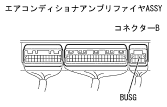
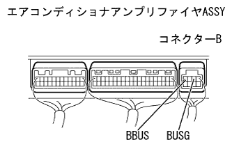

DTC B1497/97 BUS IC Communication Malfunction |
| DTC No. | Detection Condition
| Inspection Area |
|---|---|---|
| B1497/97 |
|
|
| Step 1 | Inspect Air Conditioner Amplifier Assembly (BBUS Terminal, BUSGND Terminal) |
 |
Using SST (Toyota electrical tester), measure the resistance between the terminals of the air conditioner amplifier assembly connector. (For Terminals of ECU, see)
| Tester Connection (Terminal Symbol) | Condition | Standard |
|---|---|---|
| B2 (BUSG) - Body ground | Always | Below 1 Ω |
Turn IG ON.
 |
Using SST (Toyota electrical tester), measure the voltage between the terminals of the air conditioner amplifier assembly connector. (For Terminals of ECU, see)
| Tester Connection (Terminal Symbol) | Condition | Standard |
|---|---|---|
| B4(BBUS) - B2(BUSG) | IG ON | 11 to 14 V |
|
| ||||
| OK | ||
| ||